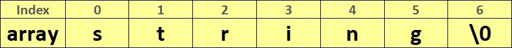

Символы
Тип данных, используемый для записи символов называется char. Для считывания ввода/вывода символа используется спецификатор %c в командах scanf/printf. Пример ввода символа:
scanf("%c", &symbol);
Навигация по странице:
1. Символы
2. Часть таблицы ASCII
3. Важное замечание по символу
4. Строки
5. Функция getchar()
6. Важное замечание по вводу
7. Функция putchar()
8. Основные функции для строк
Задачи на строки:
‣ Уровень 1
‣ Уровень 2
Под одну переменную типа char отводится в памяти место в 8 бит, это значит,
что значение переменной может быть в пределах от -128 до 127. В переменной по факту хранится номер символа в таблице символов ASCII (таблицу можно посмотреть в интернете).
Часть таблицы ASCII:
Чтобы использовать номер символа, нужно написать этот символ в одинарных кавычках, например: ’$’. Это обозначение интерпретируется программой как номер символа $, то есть '$' = 36.
Задача: вводится символ, если это заглавная английская буква C, то вывести yes, иначе no.
Решение: У нас есть два варианта как сравнить символы. Первый - это воспользоваться таблицей ASCII, в ней номер символа C равен 67. Второй - это воспользоваться одинарными ковычками: 'C'. Естественно второй способ кажется нам проще(нам не нужно узнавать номер требуемого символа), но бывают задачи, в которых нужно воспользоваться данной таблицей. Такая задача есть чуть ниже.
Первый способ:
1
2
3
4
5
6
7
8
9
10
11
12
13
14
#define _CRT_SECURE_NO_WARNINGS #include<stdio.h> #include<stdlib.h> int main() { char symbol; // переменная типа char scanf("%c", &symbol); if (symbol == 67) { printf("YES"); } else { printf("NO"); } return 0; }
Второй способ:
1
2
3
4
5
6
7
8
9
10
11
12
13
14
#define _CRT_SECURE_NO_WARNINGS #include<stdio.h> #include<stdlib.h> int main() { char symbol; // переменная типа char scanf("%c", &symbol); if (symbol == 'C') { // напоминаем, что 'C' равен 67 printf("YES"); } else { printf("NO"); } return 0; }
Важно!
Так как в переменной хранится номер символа, то это значит, что к переменной применимы все операции сложения, умножения, разности и деления, как и для обычных чисел. Эти операции будут производиться для номеров символов.
Задача: вводится заглавная буква английского языка, нужно вывести ее же, но только строчную.
Решение: Давайте посмотрим на таблицу символов, мы видим, что заглавные и строчные буквы идут по порядку от ’A’(номер 65) до ’Z’(номер 90) и прописные тоже от ’a’(номер 97) до ’z’(номер 122). Поэтому, чтобы перейти от любой заглавной буквы к соответствующей ей строчной букве нужно прибавить к её номеру 32. Код на Си:
1
2
3
4
5
6
7
8
9
10
#define _CRT_SECURE_NO_WARNINGS #include<stdio.h> #include<stdlib.h> int main() { char symbol; // переменная типа char scanf("%c", &symbol); symbol = symbol + 32; printf("%c", symbol); return 0; }
Строки
В языке Си нет отдельного типа строк. Поэтому для записи строк используют массив типа char, то есть каждый элемент массива это какой-нибудь символ. Количество элементов массива будет являться максимальным размером строки. Важно помнить, что даже пробел это отдельный символ и он будет записан в массив.
Давайте попробуем ввести строку. Можно воспользоваться привычной уже нам функцией ввода scanf() вместе со спецификатором %s:
scanf("%s", &string), где string это массив типа char.
Но, используя scanf(), ввод строки будет осуществляться только до пустого символа, которым может быть и пробел. Поэтому, чтобы ввести полностью строку(до символа перевода строки), используется функция gets():
gets(string), где string это массив типа char.
Последним элементом строки являться нуль символ, он обозначается так: '\0'. Этот символ нужен, чтобы понимать, где закончилась строка, а также, чтобы правильно работали функции для работы со строками.
Вот так выглядит строка "string", записанная в массив array:
Функции putchar() и getchar()
Эти функции служат для ввода и вывода только одного символа.
getchar()
Функция getchar() служит для ввода одного символа и возвращает его. Пример ввода символа с помощью getchar():
int main() { char a; a = getchar(); return 0; }
Если достигнут конец файла, то getchar() возвращается EOF. Этот факт можно использовать для ввода строки. Например, вам нужно вывести только цифры из заданной строки. Часть кода на Си:
char s; while ((s = getchar()) != EOF) { if (s >= '0' && s <= '9') { putchar(s); } }
Важно!
Часто в задачах нам нужно ввести что-то через функцию ввода scanf(), а после нее вести строку. Но scanf() не считывает символ перевод строки '\n', поэтому gets(), следуя за scanf(), считает пустую строку. Для решения этой проблемы нам как раз может пригодиться getchar(). Он и считает этот одиночный символ перевода строки '\n'. Задача: водится размер строки и сама строка, нужно вывести строку. Код на Си:
1
2
3
4
5
6
7
8
9
10
11
12
#define _CRT_SECURE_NO_WARNINGS #include<stdio.h> #include<stdlib.h> int main() { char S[10]; int n; scanf("%i", &n); getchar(); gets(S); printf("%s", S); return 0; }
putchar()
Если нам нужно вывести символ, то мы можем использовать не printf(), а putchar(). Пример ввода с помощью getchar() и вывода с помощью putchar():
int main() { char a; a = getchar(); putchar(a); return 0; }
Основные функции для строк
Существуют разные функции для строк, полностью про все функции рассказано в разделе Основные библиотеки в Си.
Ниже приведены часто используемые функции:
1) Длина строки. В переменную length будет записана длина строки S.
int length = strlen(S);
2) Сравнение строк. Если S1 > S2, то в переменную compare возвратиться 1, если S1 == S2, то 0,
если S1 < S2, то -1. Функция
сравнивает две строки посимвольно.
int compare = strcmp(S1, S2);
3) Копирование строки. Эта функция копирует строку string2 в string1, то есть после применения этой функции строка string1 будет равна string2.
strcpy(string1, string2);
4) Присоединение строк. Эта функция присоединяет строку string2 к строке string1, возвращает string1, при этом строка string2 остается прежней.
5) Поиск подстроки. Эта функция ищет первое вхождение строки string2 в string1. Возвращает указатель на первый символ строки string2 в string1. Если строки string2 нет в string1, то возвращает NULL.
char* ans; // указатель на первое вхождение ans = strstr(string1, string2); if (ans == NULL) { printf("string not found"); } else { printf("%i", ans - string1); }
Если строка string1 = "32451", а строка string2 = "45", то алгоритм выведет 2.
Чтобы закрепить материал, можете прорешать 1 уровень задач по строкам.
Code.C
© Copyright Павел Калашников 2021
обратная связь code.c04@mail.ru